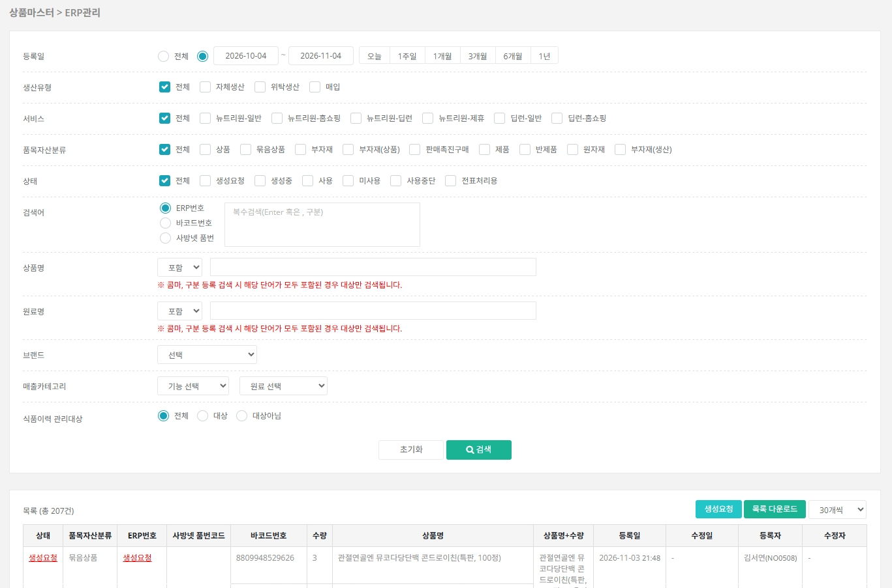
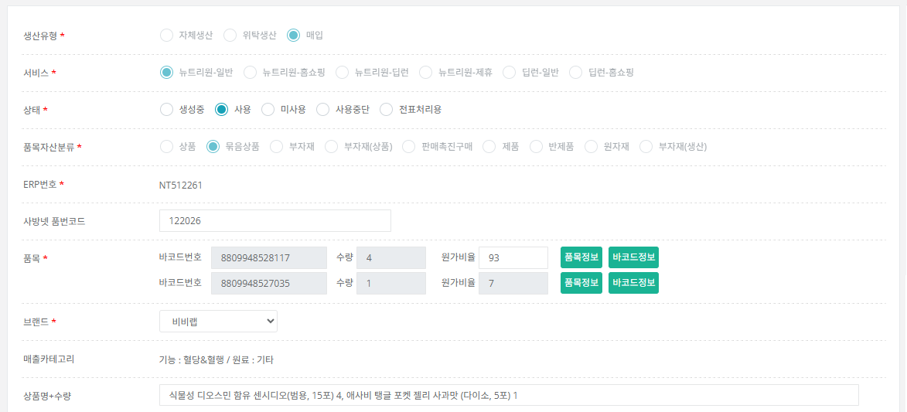

바코드를 조합해 ERP 번호(출고 구조)를 만드는 화면입니다. 이 페이지는 공통 규칙과 매입 상품 등록을 설명하고, 자체생산·위탁생산 제조라인은 다음 페이지에서 이어집니다.
[상품마스터] → [ERP관리]에서 목록을 확인합니다. 선택한 조건을 모두 만족하는 ERP만 보여줍니다.

| 생산유형 | 자체생산: 뉴풀필 등 자사에서 제조하는 상품 / 위탁생산: 원료를 전달한 뒤 제조사가 생산하는 상품 / 매입: 제조사에서 완제품으로 입고되는 상품 |
|---|---|
| 서비스 | 뉴트리원-일반, 뉴트리원-홈쇼핑, 뉴트리원-딥런, 뉴트리원-제휴, 딥런-일반, 딥런-홈쇼핑 (기준표는 아래 3번 참고) |
| 품목자산분류 | 상품, 묶음상품, 부자재, 부자재(상품), 판매촉진구매, 제품, 반제품, 원자재, 부자재(생산) |
| 상태 | 생성요청 / 생성중 / 사용 / 미사용 / 사용중단 / 전표처리용 |
목록 우측 위 [생성요청] 버튼으로 새 ERP 생성을 요청합니다. 요청하면 담당자에게 안내 메일이 자동 작성되며(발송 여부는 직접 선택), 담당자가 구성을 확인한 뒤 ERP를 최종 생성합니다.
| 승인여부 N 권한자 (일반 영업 담당자) | 등록하면 무조건 생성요청 단계로 들어갑니다. 상태·ERP번호·사방넷 품번코드는 처음에 보이지 않습니다. |
|---|---|
| 승인여부 Y 권한자 (승인 권한자) | 생성요청 단계 없이 바로 값을 골라 등록합니다. 상태 기본값은 사용이며, ERP번호·사방넷 품번코드도 입력할 수 있습니다. |
[생성요청]을 누르면 ERP 등록 요청 창이 열립니다. 생산유형을 고르면 선택 가능한 서비스와 품목자산분류가 자동으로 바뀝니다.

| 생산유형 | 기본값 매입. 생산유형에 따라 품목자산분류가 활성/비활성으로 바뀝니다.
|
|---|---|
| 서비스 | 기본값 뉴트리원-일반. 매입은 모든 서비스를 선택할 수 있고, 자체생산·위탁생산은 뉴트리원-일반, 딥런-일반만 선택할 수 있습니다. |
서비스 선택 기준
| 뉴트리원-일반 | 뉴트리원 제품이며, 홈쇼핑 외 판매인 경우 |
|---|---|
| 뉴트리원-홈쇼핑 | 뉴트리원 제품이며, 홈쇼핑 판매인 경우 |
| 뉴트리원-딥런 | 딥런 제품이며, 뉴트리원에 판매 거래되는 경우 |
| 뉴트리원-제휴 | 뉴트리원 제품이며, 일반 고객용이 아닌 별도 출고 구성품일 경우 |
| 딥런-일반 | 딥런 제품이며, 딥런 법인 기준 홈쇼핑 외 판매인 경우 |
| 딥런-홈쇼핑 | 딥런 제품이며, 딥런 법인 기준 홈쇼핑 판매인 경우 |
품목자산분류 선택 기준
| 상품 | 바코드 기준 품목 1개이고 수량이 1개인 경우 |
|---|---|
| 묶음상품 | 바코드 기준 품목 1개이고 수량이 2개 이상이거나, 품목이 2개 이상인 경우 |
| 부자재 | 상품이 아닌 원가 배분 없는 쇼핑백 등의 경우 |
| 부자재(상품) | 상품이 아니지만 상품에 포함되는 케이스, 제관, 원료의 경우 |
| 판매촉진구매 | 내부에서 구매하는 프로모션 증정용 품목, 외부 사입 증정품(예: 초콜릿, 파우치 등) |
| 제품 | 자체생산 또는 위탁생산 완제품 |
| 반제품 | 자체생산·위탁생산 시 BOM 등록 시 배합 혹은 충진 단계 제품 |
| 원자재 | 자체생산·위탁생산 시 원료 |
| 부자재(생산) | 자체생산·위탁생산 시 사용되는 단케이스 등 포장 및 부자재 |
일반 입력 항목은 화면 안내를 따르면 되고, 아래는 묶음상품의 원가율 · 브랜드 · 매출카테고리가 자동으로 계산되는 정책입니다. 값이 이상하면 이 기준으로 확인하세요.
| 원가율 |
|
|---|---|
| 브랜드 |
|
| 매출카테고리 | 같은 방식으로, 모든 품목이 동일하면 그 카테고리 / 합산 원가 비율 75% 이상인 카테고리 / 없으면 기타 |
저장하거나 생성요청할 때 조건에 맞지 않으면 아래 안내 문구가 나옵니다. 문구를 읽고 안내대로 수정하세요.
| 조건 | 안내 문구 |
|---|---|
| 선택한 바코드에 사용중단 · 미사용 상태가 포함된 경우 | 현재 사용중단, 미사용 상태 바코드가 포함되어 있습니다. 바코드번호 NNNNNN |
| 같은 서비스에 동일한 바코드 · 수량 구성이 이미 등록된 경우 (뉴트리원-제휴 제외) | [서비스명] ERP번호 [ERP번호] 동일한 구성으로 이미 등록되어 있습니다. |